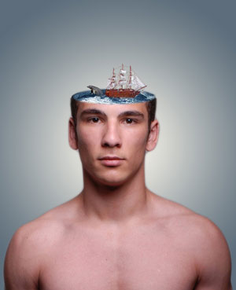
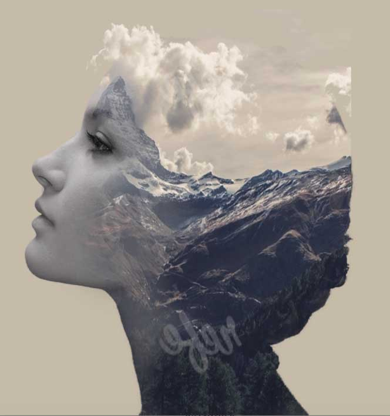
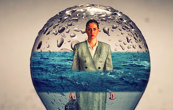

Anne Meinertz
Baggrund
Mit navn er Anne Meinertz og er 22 år gammel. Jeg er opvokset i en lille by der hedder Ikast. Her boede jeg indtil April 2017, hvor jeg flyttede til Århus Ø med min kæreste. Jeg har hele mit liv elsket at være kreativ. Har altid haft en masse tusser, farvepapir m.m. Jeg har altid fundet roen i at sidde og male et billede, lave julepostkort, bordkort, invitationer m.m. med stille og rolig musik. I min fritid er jeg meget aktiv anlagt. Jeg cykler til alt, elsker motion der er blandet med vægte og cardio og går rigtig meget op i sundhed, og hvordan jeg behandler min krop. Derudover er jeg en kæmpe bage freak. Jeg elsker at lave sundere boller og kager – men en lækker snasket en vinder også i nu og næ.
Jeg valgte multimediedesigner uddannelsen, da jeg som sagt har elsket at være kreativ hele mit liv – det var nok primært designdelen der prægede mig. Efter bare en uge, må jeg indrømme at interaktion har fanget mig mindst ligeså meget. Jeg elsker den sammenhæng, der er i alle fagene på uddannelsen. Jeg elsker kombinationen af alle fire fag – de fanger mig virkelig! Jeg har aldrig haft noget i folkeskolen eller på HHX, der har fanget mig 110% ligesom denne uddannelse gør. Dagene med undervisning, selvstudie og case opgaverne flyver afsted.
Jeg finder min inspiration i forhold til design på Google, Pintrest, Behance (som jeg faktisk fandt da jeg var i gang med denne case), Instagram, på gaden, i alle forskellige slags interiør butikker.
Nedenstående billeder er lavet i photoshop i selvstudietimerne ved hjælp af youtube.



Mine færdigheder
HTML
40%
Photoshop
35%
Illustrator
40%
Design
50%